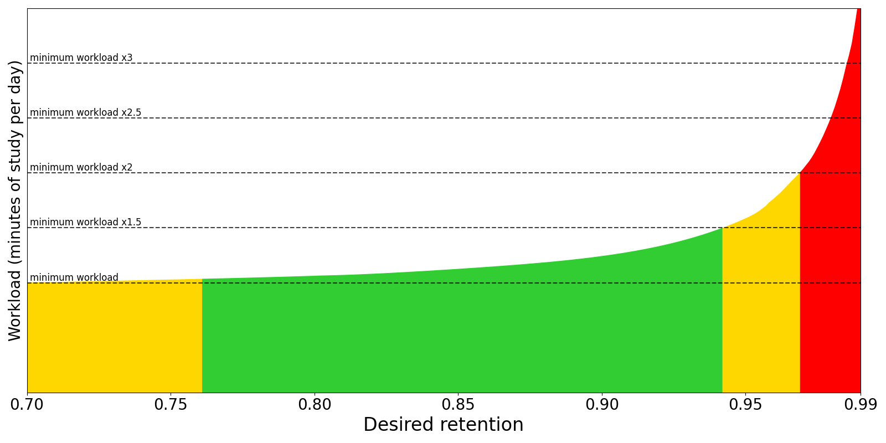

牌組選項 Deck Options（英文）
牌組選項主要用於控制卡片排程。建議先使用預設選項，熟悉Anki幾週過後再進行調整。更改選項前請先了解清楚各選項的作用，設定錯誤可能會使學習效率下降。
在電腦上，你可以透過以下方式來打開牌組選項：
- 在「牌組」畫面中按一下齒輪圖示。
- 在「牌組」畫面中選擇一個牌組，然後按一下底部的「選項」按鈕。
- 在複習時選擇「更多」>「選項」。
- 在複習時按下 O 鍵。
預設組
牌組選項儲存在「預設組」中，多個牌組可共用一個預設組，所以你可以同時更新多個牌組的設定。新建立的牌組會使用一個叫「預設」的預設組。
若要修改單一牌組設定，請按一下牌組選項視窗右上角的箭頭圖示。你可以執行以下動作：
- 儲存：儲存在牌組選項中所做的所有更動。
- 新增預設組：為當前牌組新增一個預設組，選項為預設值。
- 複製：複製當前預設組。
- 重新命名：更改當前預設組的名稱。
- 移除：刪除當前預設組。刪除預設組後，下次同步時會單向同步。
- 儲存至所有子牌組：將預設組套用到當前牌組下的所有子牌組。
牌組選項不會即時套用到過往作答。例如，當你更改了卡片答錯後的延遲時間後，更改選項前答錯的卡片仍然會保留先前延遲。
子牌組
牌組有子牌組時，各子牌組可以使用不同的預設組。顯示卡片時，Anki會檢查卡片所在的子牌組，並使用相應選項。但有兩種情況例外：
舉例來說，如果你有如下牌組：
- 牌組A（預設組1）
- 牌組A::子牌組B（預設組2）
兩個預設組除以下兩處不同：
- 預設組1：
- 學習階段：
1m 10m - 新卡片/複習卡順序：
與複習卡混合
- 學習階段：
- 預設組2：
- 學習階段：
20m 2h - 新卡片/複習卡順序：
先顯示複習卡
- 學習階段：
其他選項完全相同。
選取「子牌組B」學習時：
- 新卡片的學習階段：
20m 2h（套用「預設組2」）。 - 先顯示複習卡，再顯示新卡片（套用「預設組2」）。
選取「子牌組A」學習時：
- 「牌組A」中的新卡片的學習階段：
1m 10m（套用「預設組1」）。 - 「子牌組B」中的新卡片的學習階段：
20m 2h（套用「預設組2」）。 - 新卡片與複習卡混合在一起（套用「預設組1」）。
每日上限
每日新卡片張數
調整每天新學習的卡片張數上限。若當天沒有學習學習，或學習張數少於上限時，下一天的卡片張數仍為所設上限——Anki不會讓你學習更多卡片來補齊上一天的進度。
學習有子牌組的牌組時，從各子牌組抽取的卡片張數上限會依各子牌組的設定來決定；而本次學習時將顯示的卡片張數上限將依所選牌組所設上限決定。
如果你使用的是較早版本，請參閱此常見問答集。
學習新卡片會增加你近期內的每日複習次數。新學的內容需要重複多次複習，隨著複習間的間隔逐漸延長，複習量才會跟著逐漸減少。舉例來說，如果你每天都學習20張新卡片，每日複習上限應保持在200張卡片左右。若要減少複習量，你可以先減少每天學習的新卡片張數，等到複習量較少時再恢復原先的上限。有些剛開始使用Anki的人會連續學習好幾百張卡片，從而導致複習量過於繁重。
每日複習上限
調整每天學習的複習卡張數上限。當天達到上限後，無論有無需要複習的卡片，Anki都不會再顯示更多複習卡。若平時學習習慣不變，在偶爾有太多卡片到期、有幾天沒使用Anki等情況下可以透過此設定來減緩總複習量。如果達到上限後仍有需要複習的卡片，「恭喜」畫面中會顯示提示訊息，若有時間則可適當提高上限。
學習有子牌組的牌組時，複習上限的運作方式與新卡片上限類似。
跨天的學習中卡片也會被算入複習上限。
分牌組設定上限
多個牌組使用相同預設組時，你可以為各個牌組分別設定上限，無需另外建立多個預設組。
每日上限有3個選項：
- 預設組：套用於使用此預設組的所有牌組。
- 當前牌組：僅套用於當前牌組。
- 僅限今天：僅限當日且僅套用於當前牌組。
新卡片不受複習上限影響
根據預設，新卡片也會計入複習上限，因此當複習卡達到上限時，新卡片也不會再顯示。啟用此選項後，新卡片將不再計入複習上限。
當有複習卡積壓時，不建議在趕上進度前開始學習新卡片，火上加油。
套用頂層牌組上限
根據預設，學習子牌組時不會套用上層牌組的每日上限。你可以將母牌組上限設定為10張卡片/天，子牌組設定為20張卡片/天。母牌組學到上限之後仍可選取子牌組繼續學習。
啟用此選項後，選取子牌組開始學習時，Anki會套用頂層牌組的每日上限。若依上述範例設定，在子牌組中最多只能學習10張卡片/天。
如果經常單獨學習子牌組，此選項可確保你在學習各子牌組時不超過總上限。
新卡片
這些選項僅影響新卡片和學習中卡片。卡片「畢業」後（完成所有學習階段後），即不再適用於這些選項。
學習階段
控制學習次數和間隔時長。必須填入一或多段時長，並以空格分隔。在複習時，每次按下「良好」將使卡片前進到下一階段，每次按下「重來」則會使卡片回到第一階段。
舉例來說，當學習階段設定為1m 10m 1d時：
- 按下「重來」後，卡片會回到第1個階段，1分鐘（
1m）後再次出現。 - 在新卡片上（或卡片按下「重來」經過1分鐘後）按下「良好」後，卡片將前進到下一個階段，10分鐘（
10m）後再次出現。 - 經過第2階段的10分鐘過後，按下「良好」，卡片將在1天（
1d）後出現。 - 第二天按下「良好」，卡片畢業，成為「複習卡」。卡片下一次顯示前的延遲由「畢業間隔」選項控制。
在不同的學習階段按下「困難」會有不同效果：
- 卡片處於第1階段時，「困難」按鈕上的延遲時長為
6分——第1和第2階段（1m和10m）的平均值。- 例外：若僅有1個學習階段，「困難」延遲將為這一學習階段的1.5倍，但最多只能比學習階段多出1天。
- 卡片處於其他學習階段時，按下「困難」按鈕會重複當前學習階段的時長。
沒有可學習的內容時，根據預設，Anki會提前顯示20分鐘以內的學習中卡片。若要關閉此功能或調整提前學習的時間長度上限，請參閱《偏好設定》。
跨天界線
Anki對較短的階段與跨天的階段有不同處理方式。對於較短的階段，卡片會在延遲時間過後立即顯示，先於複習卡與新卡片，讓你能儘早回答卡片。當階段跨天時，延遲時長會被轉換為天數。舉例來說，若次日始於5小時後，而當前階段的延遲為6小時，這一延遲會被轉換為1天。
畢業間隔
「畢業間隔」是學習中的卡片畢業後的第一個間隔，即卡片在最後一個學習階段按下「良好」後，會在「畢業間隔」所設天數後出現。請參閱前文中的範例。
「簡單」間隔
按下「簡單」後，卡片下一次出現前的間隔。
無論在哪個學習階段，為學習中的卡片按下「簡單」按鈕後，卡片都會直接晉級為複習卡，使用此選項所設延遲時間。「簡單」間隔通常應比畢業間隔稍長幾天，最短不應少於畢業間隔。
插入順序
新增卡片時，卡片插入牌組中的順序，可選隨機或循序。更改此選項後，Anki會對使用當前預設組的所有牌組重新排序。
在較新版本中，此選項應設定為循序，透過顯示順序來調整新卡片順序。
遺忘
為複習卡按下「重來」按鈕即代表你遺忘了這張卡片。這些選項影響遺忘的卡片。
重新學習階段
卡片遺忘後的學習階段。複習卡回答失敗（即按下「重來」）後會進入「重新學習階段」。通過所有階段後，卡片方可重新晉級為複習卡。
留空時，卡片不會進入重新學習階段，根據預設會將下一次間隔改為1天。
最短間隔
卡片通過重新學習階段後的最短間隔。預設值為1天，即卡片重學完過後將在1天後出現。
低效卡
控制對低效卡的處理方式。進一步了解低效卡。
顯示順序
學習時，此章節中的選項會採用所選牌組中的設定，而不是卡片所屬牌組中的設定。
這些選項僅在v3排程器中可用。
在《學習》章節中進一步了解顯示順序。
新卡片收集順序
從牌組中收集（抽取）新卡片的順序。有以下選項：
-
牌組順序：依子牌組順序，由上至下收集卡片。子牌組中的卡片依遞增順序收集。若所選牌組已達每日上限，收集卡片時可能不會檢查到順序較低的牌組。此選項在較大的集合中速度最快，並讓你能夠優先學習順序較高的子牌組。
牌組/子牌組總是依字母順序排序，因此你可以在牌組名稱開頭加上序號（如「001」）來控制順序。另外，
_和~分別會排在字母數字前後，可以用來將牌組置於最前/最後。卡片順序一開始由「插入順序」選項決定，但你也可以另外對卡片重新排序。
-
牌組→隨機筆記：依子牌組順序，由上至下，在各子牌組中隨機選取筆記，然後收集卡片。
-
順序遞增：依遞增順序（到期序號#）收集卡片，通常為舊卡片優先。
-
順序遞減：依遞減順序（到期序號#）收集卡片，通常為新卡片優先。
-
隨機筆記：隨機選取筆記，然後收集卡片。
-
隨機卡片：依隨機順序收集卡片。
新卡片排序順序
控制收集後應如何對新卡片排序。有以下選項：
-
卡片類型→收集順序：依卡片類型的序號順序來顯示卡片。卡片類型序號相同的卡片依收集順序顯示。當停用推遲關聯卡片時，所有「正面→背面」卡片都會在所有「背面→正面」卡片之前顯示。若要在單次學習中顯示同一則筆記的所有卡片，此選項可以幫你拉開關聯卡片間的距離。
-
收集順序：依收集順序顯示卡片。當停用推遲關聯卡片時，此選項通常會讓同一則筆記的所有卡片連續出現。
-
卡片類型→隨機：依卡片類型的序號順序來顯示卡片，但卡片類型序號相同的卡片會依隨機順序顯示。使用此選項可以在隨機顯示卡片的同時確保關聯卡片不會連續出現。
-
隨機筆記→卡片類型：隨機挑選筆記，然後依卡片類型序號順序顯示所有關聯卡片。
-
隨機：完全隨機顯示收集的卡片。
新卡片/複習卡順序
新卡片與複習卡顯示的先後順序，也可以混合顯示。
跨天學習/複習卡順序
跨天學習時，（重新）學習中的卡片與複習卡顯示的先後順序，也可以混合顯示。學習中的卡片通常比複習卡較難，因此有些人可能偏好最後學習這些卡片（先學完簡單的內容），而有些人則可能想先學完這些卡片（能留有更多時間來複習遺忘的卡片）。
複習卡排序順序
控制複習卡的排序順序。有以下選項：
- 到期日期→隨機：預設順序，會先複習等待較久的卡片。進度沒有或僅有稍微落後時建議使用此選項。過久未使用Anki後或複習進度落後過多時，建議暫時使用其他選項。
- 到期日期→牌組順序：等待較久的卡片順序較高，然後依子牌組順序排序。
- 牌組順序→到期日期：依子牌組順序排序。一般不建議使用此順序，每次複習時卡片順序都相同可能會導致透過聯想得出答案，影響實際記憶效果。
- 間隔遞增：先顯示間隔較短的卡片。
- 間隔遞減：先顯示間隔較長的卡片。
- 輕鬆度遞增：先顯示較難的卡片。
- 輕鬆度遞減：先顯示較簡單的卡片。
推遲
Anki收集卡片的順序為當天學習卡片→跨天學習卡片→複習卡→新卡片。這個順序影響推遲卡片的處理方式：
- 啟用所有推遲選項時，會顯示關聯卡片中順序最前的卡片。例如，複習卡會優先於新卡片顯示。
- 學習關聯卡片中順序較後的卡片後，較前的卡片不會被推遲。舉例來說，停用「推遲關聯的新卡片」時，學習新卡片後，跨天學習卡片和複習卡不會被推遲，因此關聯的複習卡和新卡片可能會在同一次學習時出現。
有以下選項：
- 推遲關聯的新卡片：暫停同一則筆記中的其他新卡片（如反向卡片、同一篇克漏字的其他空格），推遲到第二天。
- 推遲關聯的複習卡：暫停同一則筆記中的其他複習卡，推遲到第二天。
- 推遲關聯的跨天學習卡片：暫停同一則筆記中其他中途跨天的學習中卡片，推遲到第二天。
進一步了解推遲卡片。
音訊
-
關閉音訊自動播放：根據預設，卡片上的任何音訊都會自動播放。啟用此選項後，若要播放音訊，請按下音訊按鈕、R 鍵或 F5 鍵。
-
重播答案時略過問題：啟用此選項後，在卡片答案面執行「重播音訊」動作時，將不會同時播放問題面上的音訊。
{{FrontSide}}欄位中的音訊不會自動播放。此選項不影響自動播放的行為。
計時器
Anki會監視每張卡片的回答耗時，用於顯示每日學習總時長。回答耗時不影響排程。
內部計時器
- 最大回答秒數：預設上限60秒。超時後，Anki會默認你已離開電腦，防止統計資料不實。
- 計時範圍：顯示答案面到按下回答按鈕。如果每張卡片的答題耗時頻繁超過60秒，建議將卡片簡化，否則應增加此上限。
螢幕上的計時器
- 顯示回答計時器：在學習畫面顯示一個計時器，計算每張卡片的學習耗時。（同樣使用內部計時器的「最大回答秒數」所設上限）
- 顯示答案後停止螢幕上的計時器：顯示答案後是否繼續計時器，直到按下回答按鈕。不影響統計資料。
自動前進
需要Anki 23.12或以上版本。使用「自動前進」可以在經過一段時間後自動執行動作。要開始使用此功能，請將「問題面顯示時長」或「答案面顯示時長」設定為任意不為0的秒數，然後在學習畫面中使用「更多」>「自動前進」動作。
放鬆日
不想在週末花太多時間學習？你可以使用「放鬆日」來減少每週指定天數的學習量。Anki計算間隔後，會再稍作調整來改變到期日期。若將所有天數設定為「減少」或「最少」，則學習量將保持不變，與「正常」設定相同。FSRS與傳統的SM-2演算法均可設定放鬆日。更改此設定不會馬上改變已有間隔，只會影響未來間隔。簡而言之，更改後到期卡片數量不會馬上變化。
FSRS
「SuperMemo 2」（SM-2）是Anki長久以來使用的演算法。現在你也可以將演算法設定為「自由間隔重複排程器」（FSRS）。FSRS能更為精準地計算遺忘的資訊量，讓你能在學習耗時不變的同時記住更多內容。
啟用FSRS後，還會新增一些新選項；SM-2專用的選項則會隱藏，如「畢業間隔」、「『簡單』間隔」等選項。「FSRS」選項會套用於所有預設組。
啟用前請注意：
- 請檢查你正在使用的所有Anki用戶端，確保你所有裝置上安裝的Anki版本都支援FSRS，否則無法正常運作。Anki 23.10、AnkiMobile 23.10、AnkiDroid 2.17以及AnkiWeb都支援FSRS。
- 若你使用了「自訂排程」版FSRS，請先清除「自訂排程」內容再啟用FSRS。
簡短教學
- 在牌組選項下的「FSRS」部分中啟用「FSRS」選項。「FSRS」僅能一次套用於整個集合中，無法單獨在一個預設組中停用。
- 確保「學習階段」和「重新學習階段」全部短於1天，且1張卡片能在1天內完成所有階段。不建議設定23小時等過長間隔，即使間隔短於1天，否則一般不太可能在一天內完成所有階段。
- 按一下「最佳化」按鈕以取得最佳FSRS參數。如果顯示「當前FSRS參數已為最佳」則無須再進行最佳化。
- 選擇「期望留存比率」數值：「留存比率」（retention）是指當一組卡片到期時，記得的卡片數量與卡片總數之間的比率。此選項是「FSRS」中最重要的設定。留存比率越高，間隔就越短，從而增加每日複習量。預設值為90%，能在留存比率和工作量之間保持平衡。若設定超過90%，你的工作量會急遽增加；超過97%時，工作量將使你不堪重負。你可以使用「期望留存比率模擬器」（「幫我選擇」按鈕）來幫你決定「期望留存比率」數值。你可為不同預設組分別設定「FRSR參數」和「期望留存比率」。
對大多數學習習慣，FSRS都能良好地進行調整——除非你在遺忘時按下的按鈕是「困難」，而不是「重來」。按下「重來」時，FSRS會認為你回答正確，只是回答時用腦、耗時較多。回答錯誤時按下「困難」會導致間隔不合常理的長。因此，如果這是你的學習習慣，請改變按鈕用法，在遺忘時按下「重來」。
為保證附加元件相容性，如果附加元件會影響間隔或排程，則通常不應與FSRS一同使用。
Desired Retention
Desired retention controls how likely you are to remember cards when they are scheduled for a review.
The default value of 0.90 will schedule cards so you have a 90% chance of remembering
them when they come up for review again. This should normally translate to remembering around 90% cards when they are reviewed, and only failing around 10%.
Here is a graph that shows how adjusting this value will affect your workload:

The exact shape of the graph is different for everyone. However, there are two patterns that hold true for all:
-
As desired retention approaches 1.0, the workload increases drastically. Imagine you have a card with a 90% chance of remembering it after 100 days. If your desired retention is
0.90, you'll review the card again in 100 days. But if your desired retention is0.95, you'll need to review it after 46 days instead. This means that the intervals of your cards almost halve at0.95desired retention and you need to review cards twice as frequently compared to0.90desired retention. At0.97, the interval will be 27 days (you'll have to review your cards 3.7x as frequently). At0.99, the interval will be only 9 days (you'll have to review your cards more than 10x more frequently than with the defaults). -
As desired retention decreases, you'll forget a greater percentage of your cards, and those cards will need to be reviewed again. Eventually, you'll get to a point where the forgotten cards contribute more to your workload than you gain from the longer delays. Also, keep in mind that forgetting material frequently is demotivating.
For these reasons, we suggest you be conservative when adjusting this
number, and recommend you keep it lower than 0.97 and higher than the minimum recommended retention.
FSRS Parameters
FSRS parameters affect how cards are scheduled. Do not change the parameters manually or copy them from someone else.
Optimize FSRS Parameters
The FSRS optimizer uses machine learning to learn your memory patterns and find parameters that best fit your review history. To do this, the optimizer requires several reviews to fine-tune the parameters.
When you click the Optimize button, FSRS will analyze your review history, and generate parameters that are optimal for your memory and the content you're studying. If you have decks that vary wildly in subjective difficulty, it is recommended to assign them separate presets, as the parameters for easier decks will be different from harder decks. There is no need to optimize your parameters frequently: once every month is sufficient.
By default, parameters are calculated from the review history of all decks using the current preset. You can optionally adjust the search before optimizing the parameters, if you'd like to change which cards are used for optimization.
You can also optimize the parameters for all of your presets at once by clicking on Optimize All Presets.
Evaluate FSRS Parameters
You can use the Evaluate button to see metrics that show how well the parameters fit your review history. Smaller numbers indicate a better fit to your review history.
Log loss doesn't have an intuitive interpretation. RMSE (bins) can be interpreted as the average difference between the predicted probability of recalling a card (R) and the actual probability measured from your review history. For example, RMSE=5% means that, on average, FSRS is off by 5% when predicting R. You don't need to understand these metrics to use FSRS.
Note that log loss and RMSE (bins) are not perfectly correlated, so two decks may have similar RMSE values but very different log-loss values, or the other way around.
By default, log loss and RMSE (bins) are calculated from all decks using the current preset. You can optionally adjust the search before evaluating the parameters, if you'd like to change which cards are used for evaluation.
Reschedule Cards on Change
This option controls whether the due dates of cards will be changed when you enable FSRS, change desired retention, or change the parameters. The default is not to reschedule cards: future reviews will use the new scheduling, but there will be no immediate change to your workload. If rescheduling is enabled, the due dates of cards will be changed. Depending on your desired retention, it will often result in a large number of cards becoming due, so this option is not recommended when first switching from SM-2.
Use this option sparingly, as it will add a review entry to each of your cards, and increase the size of your collection.
If you're first switching from SM-2 and still wish to use this option, we recommend you first create a backup, enable FSRS with rescheduling, and then if needed, you can undo or restore from the backup.
Compute Minimum Recommended Retention
Compute minimum recommended retention (CMRR) attempts to find the desired retention value that leads to the most material learned, in the least amount of time. The calculated number can serve as a reference when deciding what to set your desired retention to. You may wish to choose a higher desired retention, if you’re willing to trade more study time for a greater retention rate. However, setting your desired retention lower than the minimum is not recommended, as you'll spend more time studying than necessary, due to increased forgetting.
The Simulator
You can use the simulator to get an estimate of your workload, either in reviews per day or in minutes of studying per day.
- Days to simulate controls the duration of the simulated study history.
- Additional new cards to simulate controls whether the simulator should simulate more cards than this preset already has. For example, if you currently have 100 cards under this preset, and you set Additional new cards to simulate to 50, the simulator will simulate a total of 150 cards. This can be useful if you plan to create more new cards in the future.
- New cards/day and Maximum reviews/day control how many new cards will be learned each day and the maximum number of reviews per day.
- Maximum interval controls the maximum interval length (in days).
To make the simulation as realistic as possible, the simulator takes into account the real memory states (difficulty, stability, retrievability) of your cards. It also uses your FSRS parameters and the value of desired retention, therefore changing them will affect the simulation.
Learning and Relearning Steps
(Re)learning steps of 1 day or greater are not recommended when using FSRS. The main reason they were popular with the legacy SM-2 algorithm is because repeatedly failing a card after it has graduated from the learning phase could reduce its ease a lot, leading to what some people called "ease hell". This is not a problem that FSRS suffers from. By keeping your learning steps under a day, you will allow FSRS to schedule cards at times it has calculated are optimal for your material and memory. Another reason not to use longer learning steps is because FSRS may end up scheduling the first review for a shorter time than your last learning step, leading to the Hard button showing a longer time than Good.
We also recommend you keep the number of learning steps to a minimum. Evidence shows that repeating a card multiple times in a single day does not significantly contribute to long-term memory, so your time is better spent on other cards or a shorter study session.
In the latest version of Anki you can let FSRS control short-term scheduling by leaving the (re)learning steps field empty. This is an experimental feature. Note that just because FSRS-5 can give you intervals shorter than one day doesn't necessarily mean that it will. Your Again interval can be one day long, or even longer.
Add-On Compatibility
Some add-ons can cause conflicts with FSRS. As a general rule of thumb, if an add-on affects a card's intervals, it shouldn't be used with FSRS. A list of commonly used add-ons and their FSRS compatibility can be found in Add-on Compatibility.
More
Several frequently asked questions about FSRS have been answered in its FAQ.
For more info on FSRS, please check:
進階選項
Maximum Interval
Allows you to place an upper limit on the time Anki will wait to reshow a card. The default is 100 years; you can decrease this to a smaller number if you’re willing to trade extra study time for higher retention. The maximum number of days a review card will wait before it's shown again. When reviews have reached the limit, Hard, Good and Easy will all give the same delay. The shorter you set this, the greater your workload will be. The default is 100 years; you can decrease this to a smaller number if you’re willing to trade extra study time for higher retention.
Historical Retention
This setting is hidden unless FSRS is turned on.
When some of your review history is missing, FSRS needs to fill in the gaps. By default, it will assume that when you did those old reviews, you remembered 90% of the material. If your old retention was appreciably higher or lower than 90%, adjusting this option will allow FSRS to better approximate the missing reviews.
Your review history may be incomplete for two reasons:
- Because you're using the Ignore cards reviewed before option.
- Because you previously deleted review logs to free up space, or imported material from a different SRS program.
The latter is quite rare, so unless you're using the former option, you probably don't need to adjust this setting.
Ignore Cards Reviewed Before
If set, cards reviewed before the provided date will be ignored when optimizing FSRS parameters. This can be useful if you imported someone else's scheduling data, or have changed the way you use the answer buttons.
起始輕鬆度
Controls the ease that cards start out with. It is set when a card graduates from learning for the first time. It defaults to 2.50, meaning that once you have finished learning a card, answering Good on subsequent reviews will increase the delay by approximately 2.5x (e.g. if the last delay was 10 days, the next delay would be around 25 days). Based upon how you rate the card in subsequent reviews, the ease may increase or decrease from its starting value.
Easy Bonus
An extra multiplier applied to the interval when a review card is answered Easy. With the default value of 1.30, Easy will give an interval that is 1.3 times the Good interval (e.g. if the Good interval was 10 days, the Easy interval would be around 13 days).
Interval Modifier
An extra multiplier that is applied to all reviews. At its default of 1.00 it does nothing. If you set it to 0.80, intervals will be generated at 80% of their normal size (so a 10 day interval would become 8 days). You can thus use the multiplier to to make your reviews less or more frequent.
For moderately difficult material, the average user should find they remember approximately 90% of mature cards when they come up for review. You can find out your own performance by opening the graphs/statistics for a deck and looking at the Answer Buttons graph - mature retention is the correct% on the right side of the graph. If you haven’t been studying for long, you may not have any mature cards yet. As performance with new cards and younger cards can vary considerably, it’s a good idea to wait until you have a reasonable amount of mature reviews before you start drawing conclusions about your retention rate.
On the SuperMemo website, they suggest that you can find an appropriate multiplier for a desired retention rate. Their formula boils down to:
log(desired retention%) / log(current retention%)
Imagine we have a current retention rate of 85% and we want to increase it to 90%. We’d calculate the modifier as:
log(90%) / log(85%) = 0.65
You can use Google to calculate this.
If you enter the resulting 65% into the interval modifier, you should find over time that your retention moves closer to your desired retention.
One important thing to note however is that the trade-off between time spent studying and retention is not linear: we can see here that to increase our retention by 5 percentage points, we would have to study 35% more frequently. If the material you are learning is very important then it may be worth the extra effort – that is, of course, something you will need to decide for yourself. If you are simply worried that you are forgetting too much, then you may find investing more time at the initial learning stage, or using mnemonics will give you more gain for less effort.
One final thing to note is that Anki forces a new interval to be at least 1 day longer than it was previously, so that you do not get stuck reviewing with the same interval forever. If your goal is to repeat a card once a day for multiple days, you can do that by setting more learning mode steps, instead of by adjusting this modifier.
「困難」間隔 Hard Interval
The multiplier applied when you use the Hard button. The percentage is relative to the previous interval, e.g. with a default of 1.20, a card with a 10-day interval will be given 12 days.
New Interval
The multiplier applied when you use the Again button on a review card. The default 0.00 means that a review card's delay is reset to zero when you forget it (which then becomes 1 day after the minimum interval is applied).
If changed from the default, it is possible for forgotten cards to preserve part of their previous delay. For example, if a card had a 100 day interval, and you set the New Interval to 0.20, the new interval would be 20 days.
While preserving part of the interval may seem to make sense, SuperMemo has observed
that preserving part of the delay can actually be counter-productive. For this reason, we recommend you leave it on the default setting.
Custom Scheduling
You can have more control over Anki's scheduling of cards by using your own JavaScript in the custom scheduling field. This is a global option, so code entered here applies to every preset.
Here is an example custom scheduling script. Note that, for Qt5 versions of Anki, the code needs to be transpiled.
// print the existing states
console.log(
JSON.stringify(states, null, 4)
);
// load the debugger if the web inspector is open
debugger;
// if the hard button is a learning step, make it
// a 123 minute delay
if (states.hard.normal?.learning) {
states.hard.normal.learning.scheduledSecs = 123 * 60;
}
// apply the same change in a rescheduling filtered deck
if (states.hard.filtered?.rescheduling?.originalState?.learning) {
states.hard.filtered.rescheduling.originalState.learning.scheduledSecs =
123 * 60;
}
// increase ease factor by 0.2 when Easy used on a review
if (states.good.normal?.review) {
states.easy.normal.review.easeFactor =
states.good.normal.review.easeFactor + 0.2;
}
You can also see FSRS custom scheduling code as an example.
The various scheduling states of cards are described in SchedulingStates.